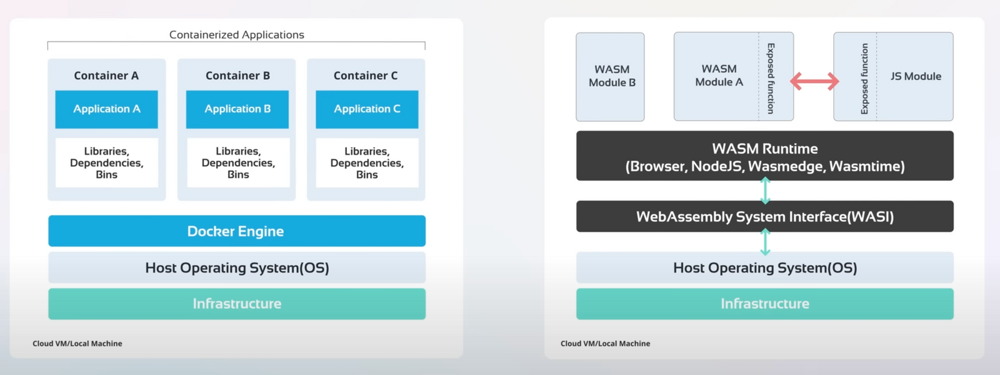
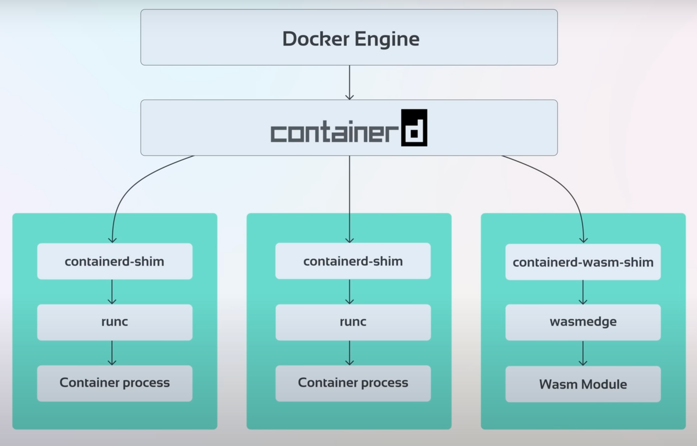
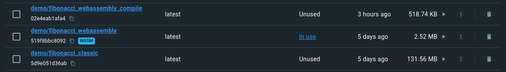

Von der Theorie zur Praxis
2023-10-04T00:00:00+0100
Von der Theorie zur Praxis
Inhalt: Theorie: Warum? | Theorie: Wie? | Docker Desktop Setup | Docker Build | Docker Run | Docker Compose | Performance | Weiterführend
Das berühmte Zitat von einem der Erfinder von Docker, Solomon Hykes: «If WASM+WASI existed in 2008, we wouldn’t have needed to created Docker» - «Wenn WASM+WASI 2008 existiert hätte, hätten wir Docker nicht erfinden müssen».
Es gibt einen fortsetzenden Tweet in dem Solomon davon Spricht, dass Docker dadurch nicht verschwinden wird. Vielmehr werden Windows, Linux und WebAssembly Container zusammen und nebeneinander auf Docker zum Einsatz kommen.
 Bild von Kode Kloud
Klassische Docker-Container beziehungsweise deren Inhalt sind für für eine bestimmte Zielarchitektur (arm, x86, usw.) kompiliert und beinhalten verschiedene Betriebssystemkomponenten.
Wenn nun eine WebAssembly-Runtime zur Verfügung steht, können diese Punkte an die Runtime abgeben werden. Als Resultat erhält man einen Container, mit folgenden zusätzlichen Vorteilen: * Beinhaltet nur Applikationscode was zu kleineren (Speicher) und sicheren (Angriffsfläche) Containern mit schnelleren Startzeiten führt. * Kompatibilität über verschiedene Architekturen und Betriebssystemen hinweg.
Inklusive den bekannten Vorteilen von WebAssembly selbst: * Sicherheit: WebAssembly Programme laufen in einer Sandbox. Es ist nicht direkt möglich auf das Hostsystem oder andere Container zuzugreifen. * Performance: WebAssembly kommt kompiliert als WebAssembly-Maschinen-Code daher. * Und Weiteren, siehe in meinem letzten Artikel
| Aspekt | Klassische | WebAssembly Container |
|---|---|---|
| Grösse | 10 bis 100 Fache an MB | Einige MB |
| Startzeiten (Performance) | Sekunden | Millisekunden |
| Performance Geschwindigkeit | Weit Weg von Native | Nahe an Native |
| Läuft in Webbrowser | Nein | Ja |
| Cross Platform / Portabilität | Nein | Ja |
| Standards | OCI | W3C und OCI |
| System Interaktionen | Beinhaltet Betriebs- und Dateisystem | Benutzt WASI um aufs Hostsystem zuzugreifen |
Zusammengefasst erhält man mit Docker + WebAssembly * Gebündelten Code (Package) * Potentiell näher bei nativer Performance * Hohe Sicherheit * Hohe Portabilität * Runtime Isolation * Potentiell schnellere Startzeit
 Bild von Kode Kloud
Nachfolgend werden die einzelnen Schichten und deren Funktionalität beziehungsweise Aufgaben kurz erklärt. Dank der breiten Akzeptanz der Standardisierungen und des Open-Source Gedanken rund um Container über Open Container Initiative und der Container Runtime containerd können verschiedene Anwendungen einfach auf verschiedenen Plattformen ausgeführt werden.
Auf der einen Seite bieten standardisierte Schnittstellen für containerd, dass dieser auf diversen Plattformen zum Einsatz kommt. Auf der anderen Seite ermöglichen die standardisierten Schnittstellen für die Container das Implementieren und Ausführen von unterschiedliche Anwendungen.
Dient als Schnittstelle zwischen den Administratoren und dem Container Manager und bietet weitere higher Level plattformspezifische Funktionalitäten.
Bekannte Container Engines sind Docker, Kubernetes, Podman, CRI-O, usw.
Umfasst das Verwalten von Images (Upload, Download) und von Containern (Erstellen, Starten, Stoppen, usw.). Im Grunde alles was man braucht, um eine Container-Plattform aufzubauen, ohne sich mit den Details des zugrunde liegenden Betriebssystems befassen zu müssen.
Bekanntester Container Manager ist containerd unterstützt durch Cloud Native Computing Foundation. Containerd ist ein Open-Source Container Manager (ursprünglich Docker), der in Go programmiert ist. Anstatt direkt von Entwicklern verwendet zu werden, ist er so konzipiert, dass er in Systeme wie Docker, Kubernetes und Weiteren eingebettet werden kann.
Ein Shim ist eine Software, die zwischen einem Container Manager (containerd, cri-o, podman, usw.) und einer Container Runtime (runc, crun, wasmedge, usw.) angesiedelt ist und das Integrationsproblem (als Schnittstelle) dieser Gegenstücke löst.
Bekanntester Shim ist die containerd-shim. Sie wird dazu verwendet um den jeweiligen Container über eine standardisierte Schnittstelle zu verwalten und zu überwachen.
Umfasst das Verwalten von Containerprozessen (Erstellen, Starten, Stoppen, usw.) und stellt dazu die Low-Level-Funktionalität bereit. Runc als Beispiel einer Runtime für Linux interagiert mit bestehenden Low-Level-Linux-Funktionen, wie Namespaces und Control Groups. Dabei folgt er dem OCI-Standard und enthält libcontainer, eine Go-Bibliothek zur Erstellung von Containern. Alternativen: * crun für Linux * gVisor für Linux * firecracker für microVMs * wasmedge für WebAssembly in Docker vorhanden und durch Cloud Native Computing Foundation unterstützt * slight für WebAssembly in Docker vorhanden * spin für WebAssembly in Docker vorhanden * wasmtime für WebAssembly in Docker vorhanden und erstellt durch Bytecode Alliance
Weil die bestehenden Shim-Implementierungen auf Artefakten von Betriebssystemen beruht, können diese nicht im gleichen Sinn direkt für WebAssembly Runtimes verwendet werden. Deshalb kommen WebAssembly Runtimes gebündelt mit eigenen Shims daher. Für wasmedge, wasmtime und wasmer gibt es hierzu runwasi.
Runwasi implementiert dabei zwei Modis: * Normal: Ein Shim Prozess pro Container * Shared: Ein Manager Service (Container) verwaltet alle Shims im Prozess
Zwei Bemerkungen im Vorfeld: * Mit Docker Desktop lässt sich auf einfache Art in verschiedenen Betriebssystemen ein WebAssembly Image builden und als Container starten. Jedoch kann dies auch mit einer standard Docker Installation umgesetzt werden. Weiter Infos unter alternative Runtimes * Weil die Docker Implementierung eher neu ist, können Herausforderungen auftreten. Daher gibt es eine Liste von bekannten Known Issues und einen Issue Tracker.
Als erstens muss Docker Desktop heruntergeladen werden. Dieser wird unter Ubuntu wie folgt installiert:
sudo chmod +x ./docker-desktop-4.24.0-amd64.deb
sudo apt install ./docker-desktop-4.24.0-amd64.debHier gilt es zu beachten, dass die aktuellste Docker Version verwendet wird > 4.24.0
Nach der Installation muss die WASM Runtime aktiviert werden. Was mit folgenden Schritten erreicht wird:
Settings.Features in development auswählen.Use containerd for pulling and storing imagesEnable WasmHinweis: Gemäss Dokumentation, müsste der Build bereits funktionieren. Jedoch war dies bei mir nicht der Fall. Meine installierten Builder hatten keine Unterstützung für die WASM/WASI Plattform.
$ docker buildx ls
NAME/NODE DRIVER/ENDPOINT STATUS BUILDKIT PLATFORMS
default docker
default default running v0.11.6+616c3f613b54 linux/amd64, linux/amd64/v2, linux/amd64/v3, linux/386
desktop-linux * docker
desktop-linux desktop-linux running v0.12.2 linux/amd64, linux/amd64/v2, linux/amd64/v3, linux/arm64, linux/riscv64, linux/ppc64le, linux/s390x, linux/mips64le, linux/mips64Daher habe ich mit folgendem Befehl einen neuen Builder erstellt:
docker buildx create --name wasm-builder --platform wasi/wasm
docker buildx use wasm-builder$ docker buildx ls
NAME/NODE DRIVER/ENDPOINT STATUS BUILDKIT PLATFORMS
wasm-builder * docker-container
wasm-builder0 desktop-linux inactive wasi/wasm*
default docker
default default running v0.11.6+616c3f613b54 linux/amd64, linux/amd64/v2, linux/amd64/v3, linux/386
desktop-linux docker
desktop-linux desktop-linux running v0.12.2 linux/amd64, linux/amd64/v2, linux/amd64/v3, linux/arm64, linux/riscv64, linux/ppc64le, linux/s390x, linux/mips64le, linux/mips64Nachfolgend als Demonstration ein einfaches Rust Programm
main.rs:
fn main() {
let s : &str = "Hello WebAssembly in Docker!";
println!("{}", s);
}Dies zusammen mit folgendem Cargo.toml:
[package]
name = "hello"
version = "0.1.0"
authors = ["Marco Kuoni"]
edition = "2021"
[[bin]]
name = "hello"
path = "src/main.rs"
[dependencies]Und folgendem Dockerfile:
# syntax=docker/dockerfile:1
FROM --platform=$BUILDPLATFORM rust:1.64 AS buildbase
WORKDIR /src
RUN <<EOT bash
set -ex
apt-get update
apt-get install -y \
git \
clang
rustup target add wasm32-wasi
EOT
FROM buildbase AS build
COPY Cargo.toml .
COPY src ./src
# Build the Wasm binary
RUN cargo build --target wasm32-wasi --release
FROM scratch
ENTRYPOINT [ "/hello.wasm" ]
COPY --link --from=build /src/target/wasm32-wasi/release/hello.wasm /hello.wasmBis auf die letzten drei Zeilen, werden die Befehle nur dazu verwendet um das Rust Programm im Docker Container zu WebAssembly zu kompilieren. Die letzten drei Zeilen sind für das WebAssembly Image verantwortlich. In dem es das kompilierte Programm in den Container kopiert und den Entrypoint definiert.
Der effektive Buildprozess wird mit dem folgendem Befehl gestartet:
docker buildx build --load --platform wasi/wasm -t demo/rust_hello ..
Hinweis: Ich musste unter
Features in development die Builds View
ausschalten, damit das Image erschien.
Damit wurde nun ein Image für die Plattform WASM erstellt mit einer Grösse von 2.52 MB.
Nun kann das Image mit folgendem Befehl gestartet werden:
$ docker run --rm --runtime=io.containerd.wasmedge.v1 --platform=wasi/wasm demo/rust_hello
Hello WebAssembly in Docker!WebAssembly Container können auch zusammen mit anderen Container wie gewohnt mit Docker Compose verwendet werden und im Verbund agieren.
Beispielhaft für unser kleines Programm ein
docker-compose.yml:
services:
server:
image: demo/rust_hello_compose
build:
context: .
runtime: io.containerd.wasmedge.v1Welches über docker compose up gestartet wird.
Ich möchte mich an dieser Stelle bei Thomas Bocek bedanken für die Erwähnung dieses Artikels. Im speziellen auch die Erwähnung seiner Bedenken bezüglich der Performance von WebAssembly in Docker. Daher gehe ich hier kurz auf die drei erwähnten Punkte ein: * Startzeit * Image Grösse * Portabilität
Zum aktuellen Zeitpunkt und gemäss meinem aktuellen Wissen, stimme ich Thomas Bocek in allen drei Punkten gerne zu. Wir haben erst gerade in den letzten drei Tagen am CG Hybrid Meeting diverse Beispiele und Benchmarks gesehen. Was ausser Frage steht ist Portabilität und Sicherheit. Ganz klar Sicherheit wird und ist immer ein Thema, aber das Level ist bereits hoch. Um das Thema nur ganz kurz anzuschneiden, hier zwei zufällige Beispiele vom Reasearch Day nach dem CG Meeting: * Shravan Ravi Narayan sprach über die Einschränkung von Spectre Attackes bei WebAssembly auf modernen CPUs. * Arjun Ramesh und Tianshu Huang über plattformübergreifende Instrumentierung, die einzigartige Einblicke in das Programmverhalten liefern kann.
Die Aussage über Image Grösse und Startup kommt als Konsequenz einer Lightweight Virtualisierung (FaaS), welche den Fokus hat jeglichen Overhead von klassischen Containern zu vermeiden. Das heisst die Applikation auf einem höheren Level zu virtualisieren und damit den klassischen Container aufzuteilen in kleinere Funktionseinheiten pro Container. Plus kann zusätzlich in WebAssembly Containern auf die komplette in Container Linux Umgebung verzichtet werden. Hierzu empfehle ich folgendes Video zu WebAssembly und Containers, welches die WebAssembly Runtime Spin benutzt und dies in Anwendung aufzeigt. Jedoch ist es natürlich ein unfairer Vergleich, kleinere WebAssembly Service Containern mit komplexeren Applikations Containern zu vergleichen. Aber alleine auf Grundlage der Grösse und der daraus enthaltenen Codes sollte es möglich sein die Startupzeit eines WebAssembly Containers unter die eines klassischen Containers zu bringen.
Ich komme aus dem Embedded-Bereich und eine klassische Diskusion ist welche Realtime ist schneller. Ähnliche Diskusionen fallen mir bei WebAssembly über native Implementierungen auf. Nehmen wir das Beispiel von Docker. Es wird im Container WebAssembly-Maschinen-Code ausgeliefert. Welcher von der WebAssembly Runtime in Maschinen-Code für die hardware Maschine umgewandelt wird. Bei all diesen Schritten gibt es nun noch Kompromisse zu treffen um dies zu realiseren. Jedoch sieht man Bestrebungen bis auf die Hardware runter um diese möglichst zu eliminieren und somit WebAssembly einen nativen Support zu ermöglichen und so ein schnelleres Nativ zu erreichen.
Ich konnte es nicht lassen und habe ganz kurz Vergleichswerte
kreiert. Dabei habe ich zweimal das gleiche fibonacci.rs
Programm klassisch und als WebAssembly Container gebildet.
fn fibonacci(n: u64) -> u64 {
if n == 0 {
return 0;
} else if n == 1 {
return 1;
} else {
return fibonacci(n - 1) + fibonacci(n - 2);
}
}
fn main() {
println!("Starting");
let n = 35;
let result = fibonacci(n);
println!("Fibonacci({}) = {}", n, result);
println!("Stopped");
}Und dies mit folgendem Code ausgewertet:
#!/bin/bash
if [ $# -lt 2 ]; then
echo "Usage: $0 <command> <num_runs>"
exit 1
fi
command_to_measure="$1"
num_runs=$2
total_execution_time=0
total_startup_time=0
total_runtime_time=0
total_shutdown_time=0
for ((i=1; i<=$num_runs; i++)); do
start_time=$(date +%s.%N)
started_time=$(date +%s.%N)
stopped_time=$(date +%s.%N)
$command_to_measure | while IFS= read -r line; do
case "$line" in
"Starting")
started_time=$(date +%s.%N)
;;
"Stopped")
stopped_time=$(date +%s.%N)
;;
*)
# echo "$line"
;;
esac
done
end_time=$(date +%s.%N)
execution_time=$(echo "$end_time - $start_time" | bc -l)
startup_time=$(echo "$started_time - $start_time" | bc -l)
runtime_time=$(echo "$stopped_time - $started_time" | bc -l)
shutdown_time=$(echo "$end_time - $stopped_time" | bc -l)
total_execution_time=$(echo "$total_execution_time + $execution_time" | bc -l)
total_startup_time=$(echo "$total_startup_time + $startup_time" | bc -l)
total_runtime_time=$(echo "$total_runtime_time + $runtime_time" | bc -l)
total_shutdown_time=$(echo "$total_shutdown_time + $shutdown_time" | bc -l)
done
avg_total_execution_time=$(echo "$total_execution_time / $num_runs" | bc -l)
avg_total_startup_time=$(echo "$total_startup_time / $num_runs" | bc -l)
avg_total_runtime_time=$(echo "$total_runtime_time / $num_runs" | bc -l)
avg_total_shutdown_time=$(echo "$total_shutdown_time / $num_runs" | bc -l)
echo "Average execution time over $num_runs runs: $avg_total_execution_time seconds"
echo "Average startup time over $num_runs runs: $avg_total_startup_time seconds"
echo "Average run time over $num_runs runs: $avg_total_runtime_time seconds"
echo "Average shutdown time over $num_runs runs: $avg_total_shutdown_time seconds"Die verwendeten WebAssembly Runtimes verwenden (JIT)[https://en.wikipedia.org/wiki/Just-in-time_compilation] theoretisch müsste aber (AOT)[https://en.wikipedia.org/wiki/Ahead-of-time_compilation] gemäss Ablaufdiagramm von zum Beispiel WasmEdge ebenfalls möglich sein.
Leider konnte ich die Runtimes Spin und Slight wie auch eine Wastime Vorkompilierung hier nicht berücksichtigen, weil
printlndamit aus dem Stand nicht funktionierte.
docker buildx build --load -f DockerfileClassic -t demo/fibonacci_classic .docker buildx build --load --platform wasi/wasm -t demo/fibonacci_webassembly .docker buildx build --load -f DockerfileCompile -t demo/fibonacci_webassembly_compile . Das Image
demo/fibonacci_webassembly_compile ist hierbei ein Wasmtime
AOT Image. Was zu Einschränkungen in der Portabililität führt. Jedoch
auf Grund der Grösse zum Beispiel bei einem Embedded
Anwendungsfall (IoT) durchaus Sinn machen könnte.
$ ./measureAvgTime.sh "docker run --rm --runtime=io.containerd.wasmtime.v1 --platform=wasi/wasm demo/fibonacci_webassembly" 1
Average execution time over 1 runs: .92003518600000000000 seconds
Average startup time over 1 runs: .00223248300000000000 seconds
Average run time over 1 runs: .00182017000000000000 seconds
Average shutdown time over 1 runs: .91598253300000000000 seconds$ ./measureAvgTime.sh "docker run --rm --runtime=io.containerd.wasmtime.v1 --platform=wasi/wasm demo/fibonacci_webassembly" 50
Average execution time over 50 runs: .79499581630000000000 seconds
Average startup time over 50 runs: .00152502634000000000 seconds
Average run time over 50 runs: .00146761514000000000 seconds
Average shutdown time over 50 runs: .79200317482000000000 seconds$ ./measureAvgTime.sh "docker run --rm --runtime=io.containerd.wasmedge.v1 --platform=wasi/wasm demo/fibonacci_webassembly" 1
Average execution time over 1 runs: 9.29828315900000000000 seconds
Average startup time over 1 runs: .00253460300000000000 seconds
Average run time over 1 runs: .00334101000000000000 seconds
Average shutdown time over 1 runs: 9.29240754600000000000 seconds$ ./measureAvgTime.sh "docker run --rm --runtime=io.containerd.wasmedge.v1 --platform=wasi/wasm demo/fibonacci_webassembly" 50
Average execution time over 50 runs: 9.19518831752000000000 seconds
Average startup time over 50 runs: .00185933672000000000 seconds
Average run time over 50 runs: .00179162598000000000 seconds
Average shutdown time over 50 runs: 9.19153735482000000000 seconds$ ./measureAvgTime.sh "docker run --rm demo/fibonacci_classic" 1
Average execution time over 1 runs: .65099649100000000000 seconds
Average startup time over 1 runs: .00220626700000000000 seconds
Average run time over 1 runs: .00316228900000000000 seconds
Average shutdown time over 1 runs: .64562793500000000000 seconds$ ./measureAvgTime.sh "docker run --rm demo/fibonacci_classic" 50
Average execution time over 50 runs: .57311583626000000000 seconds
Average startup time over 50 runs: .00151897690000000000 seconds
Average run time over 50 runs: .00152541990000000000 seconds
Average shutdown time over 50 runs: .57007143946000000000 secondsDies Resultiert in folgende Perfomancevergleiche verglichen mit der klassischen Variante im Mittel über 50 Messungen: Wasmtime 50: * Execution: 38% langsamer * Startup: 0.4% langsamer * Runtime: 3.8% schneller * Shutdown: 38 % langsamer
WasmEdge 50: * Execution: 1504% langsamer * Startup: 22% langsamer * Runtime: 17% langsamer * Shutdown: 1512% langsamer *
$ ./measureAvgTime.sh "docker run --rm --runtime=io.containerd.wasmtime.v1 --platform=wasi/wasm demo/fibonacci_webassembly" 5000
Average execution time over 5000 runs: .86158419502540000000 seconds
Average startup time over 5000 runs: .00110639370920000000 seconds
Average run time over 5000 runs: .00110670086200000000 seconds
Average shutdown time over 5000 runs: .85937110045420000000 seconds$ ./measureAvgTime.sh "docker run --rm demo/fibonacci_classic" 5000
Average execution time over 5000 runs: .59495869612380000000 seconds
Average startup time over 5000 runs: .00135375017460000000 seconds
Average run time over 5000 runs: .00132145809240000000 seconds
Average shutdown time over 5000 runs: .59228348785680000000 secondsWasmtime 5000: * Execution: 45% langsamer * Startup: 18% schneller * Runtime: 16% schneller * Shutdown: 45% langsamer
Dies soll keine Wissenschaftliche Abhandlung darstellen, jedoch ein wenig ein Gefühl für die Unterschiede vermitteln.
Was für mich auffällig ist: * Das WebAssembly Image ist deutlich
kleiner * Wasmtime im Vergleich zur klassischen Variante ist nur minimal
langsamer. Interessanterweise ist vor allem beim Verlassen der
main Funktion ein klarer unterschied zu spüren. * Die
WebAssembly Runtimes haben noch grosse Unterschiede in der
Performance
Zeit ist aktuell etwas knapp, jedoch werde ich versuchen diesem Thema noch mehr Aufmerksamkeit zu schenken. Gerne bin ich auch offen für weitere Inputs oder Fragen. Wie schon einleitend erwähnt, sehe ich grosse Bestrebungen nach Banchmarks in der Community und daher werden wir bestimmt in nächster Zeit noch bessere Tools und Auswertungen erhalten.
Als Grundlage für diesen Artikel dienten diverse Quellen. Eine Liste der Quellen findet sich nachfolgend, wo man auch weitere Beispiele findet: * Docker Blog: Build, Share, and Run WebAssembly Apps Using Docker * Docker Blog: Why Containers and WebAssembly Work Well Together * Docker Blog: Introducing the Docker+Wasm Technical Preview * Docker Desktop Dokumentation: Wasm * Docker Dokumentation: Alternative Runtimes * Medium: Docker + WebAssembly: a quick intro * KodeKloud: WebAssembly vs Docker: Exploring their Connection and Potential * GitHub: Runwasi * GitHub: Issues - Docker+Wasm Integration * Wasm Labs: WebAssembly - Docker without containers! * Benchmarks * WebAssembly on the server-side
Ich bin gerne bereit den Artikel zu präzisieren, erweitern oder zu korrigieren. Schreibt ein Feedback oder meldet euch direkt bei mir.
Erstellt von Marco Kuoni, Oktober 2023